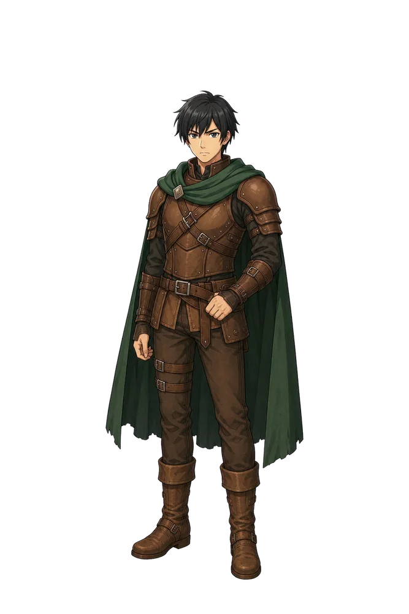
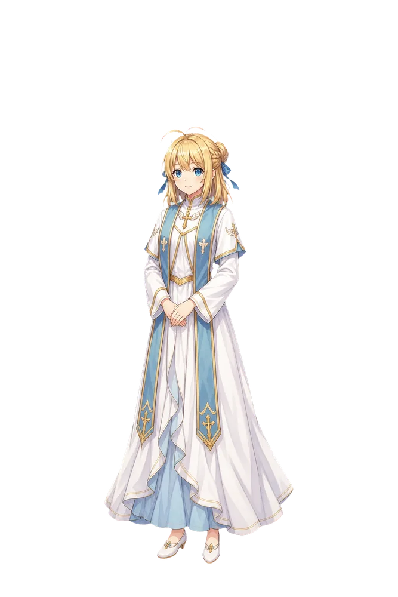
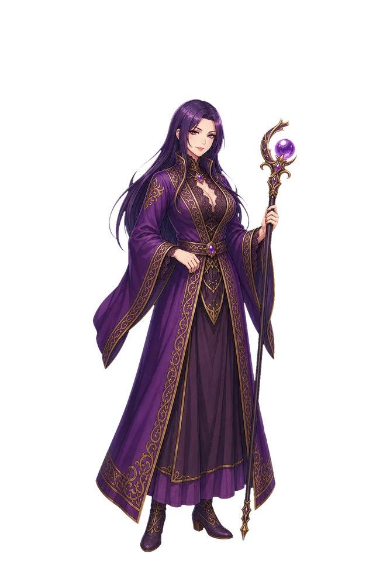
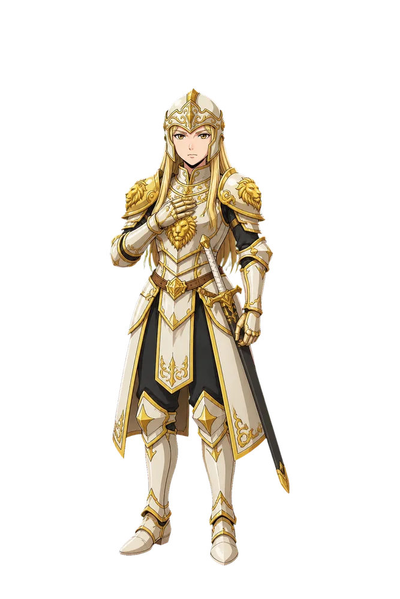
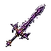
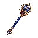
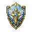
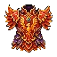
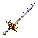
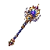

GAME FILE 01 / IN DEVELOPMENT
探索し、戦い、拾い、鍛え、仲間と深部へ。
PC・スマートフォンで遊べる個人制作ブラウザRPG。
STORY / NO SPOILERS
六つの光が砕けた日から、
旅は始まる。
世界を支える火・水・風・雷・光・闇――六つのプリズム。5年前の「プリズム崩壊」で故郷と大切なものを失った少年アルスは、各地で起きる異変を追いながら、自分の過去と世界のひずみに向き合っていきます。
PRISMA ABYSSは、ダンジョン攻略と装備収集だけでなく、旅の中で出会う人々の誤解、後悔、再会、選び直しを重ねていく長編RPGです。仲間が増えるほど戦い方が広がり、同時に世界の見え方も変わっていきます。

CORE LOOP
戦って終わりじゃない。次の一歩を、自分で組み直す。
- 01
EXPLORE
歩く・探すフィールドやダンジョンを進み、敵・宝箱・イベント・寄り道を見つける。
- 02
BATTLE
戦う・見極める4人パーティを軸に、通常攻撃・特技・道具・防御・作戦を使い分ける。
- 03
LOOT
拾う・比べる装備や素材を持ち帰り、能力だけでなくオプション・特性・シナジーを比較する。
- 04
BUILD
鍛える・再編する装備、仲間、スキル、鍛冶・錬金を見直し、より深い場所へ挑む。
FIELD & BATTLE
土地が変われば、空気も戦いも変わる。
火山、海底神殿、光の宮殿、そして深淵。物語の進行に合わせて景色と敵の傾向が変わり、探索の手触りも段階的に広がります。


PARTY
仲間は、ただのステータスじゃない。
物語の中で出会った人物が仲間になり、それぞれ異なる職・能力・スキル・特性を持って戦います。4人の戦闘メンバーをどう組むか、誰を育てるかで攻略の形が変わります。
能力や装備だけでなく、人物同士の過去や関係も物語の中で積み重なっていきます。




EQUIPMENT FILE






LOOT & BUILD
同じ名前の装備でも、同じ一品とは限らない。
装備には能力値だけでなく、ランダムな付与効果や特性が関わります。組み合わせによってシナジーが生まれるため、「数字が大きいから装備する」だけでは終わりません。
- OPTIONS
- 付与効果を比較して、自分のビルドに合う一品を選ぶ。
- SYNERGY
- 特性の組み合わせを意識して、装備全体の役割を作る。
- BLACKSMITH
- 合成・強化・精錬を使い分け、手に入れた装備をさらに育てる。
- ALCHEMY
- 探索で集めた素材から、冒険を支える道具を作る。
BESTIARY
小さな魔物から、深層の異形まで。
倒した魔物は図鑑へ記録されます。地域や進行に応じて生態も強さも変化し、探索を続けるほど図鑑そのものが旅の記録になっていきます。


BEYOND THE MAIN PATH
物語を進めても、育成はまだ終わらない。
短い周回だけを繰り返すゲームではなく、物語・探索・収集・育成を行き来できる構成を目指して開発しています。
AUTO / SPEED
仲間ごとの作戦を設定し、AUTO戦闘と戦闘速度変更で周回を調整。
QUESTS
本編以外の依頼や仲間に関わるクエストを進め、世界の横道を拾う。
ACHIEVEMENTS
戦闘・探索・収集・鍛冶・錬金・仲間など、プレイの積み重ねを記録。
ABYSS RIFT
物語側の深淵とは別に、到達階層を伸ばしていく「深淵の亀裂」を用意。
REBIRTH
一部の成長と引き換えに恒久的な力を得て、さらに先の育成へ。
BESTIARY
遭遇・討伐した魔物を記録し、図鑑を埋めること自体を探索目標に。
BEFORE PLAY
プレイ前のご案内
- 現在も開発中です。シナリオ、マップ、ゲームバランス、UIを継続して更新しています。更新によって仕様が変わる場合があります。
- セーブデータは端末側に保存されます。ブラウザのデータ削除や端末変更に備え、ゲーム内のエクスポート機能をご利用ください。
- PC・スマートフォンの両方に対応します。フィールド操作はタッチ操作を含めて設計し、戦闘にはAUTO・速度変更も用意しています。
- 不具合報告について。再現手順、使用端末、ブラウザ名を添えていただくと確認しやすくなります。
掲載画像はPRISMA ABYSSの制作・ゲーム素材を使用しています。開発中のため、実際のゲーム画面・データ・仕様は更新される場合があります。